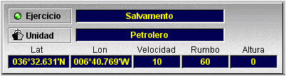

Pantalla de Presentación Cartográfica
La Pantalla de Presentación Cartográfica incluye las siguientes áreas:
- Presentación Cartográfica.
- Área de Datos de la Presentación Cartográfica.
- Área de Datos de la Unidad.

La Presentación Cartográfica y el Área de datos de la Presentación Cartográfica tienen la misma funcionalidad que se describe para la consola de instructor.
El Área de Datos de la Unidad se encuentra en la zona superior izquierda de la Pantalla de Presentación Cartográfica de la consola de alumno.

En esta área se presentan campos con la siguiente información:
- Nombre y estado del ejercicio en ejecución. El estado se presenta mediante un led que estará gris cuando el ejercicio esté en pausa y verde cuando el ejercicio esté en ejecución.
- Nombre de la unidad controlada en la consola de alumno.
- Latitud y Longitud de la unidad controlada.
- Velocidad en nudos, Rumbo en grados y Altura en pies de la unidad controlada.
Si la unidad controlada tiene una plataforma de tipo Buque Simple, el alumno puede cambiar la velocidad, rumbo y altura (unidades aéreas) de la unidad que controla introduciendo los valores deseados en los respectivos campos de este área de datos y pulsando la tecla "Enter".